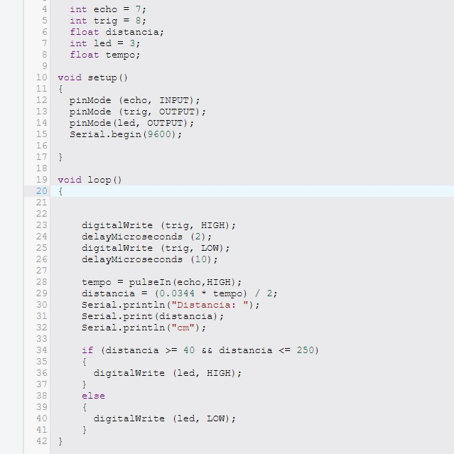

Objetivo
Controlar led com base na aproximação de objetos.
Materiais Utilizados
Arduino Uno R3 (Placa microcontroladora)
Protoboard (Realizar as conexões sem necessidade de solda)
LED (vermelho)
Resistor (Proteção para evitar que o LED queimasse)
Sensor Ultrassônico HC-SR04 (detectar e medir a distância de objetos)
Diagrama do Circuito
O projeto utiliza um sensor ultrassônico (HC-SR04) para medir distâncias e acionar um LED com
base nessa leitura. O sensor ultrassônico funciona emitindo pulsos ultrassônicos e medindo o
tempo que esses pulsos levam para retornar após baterem em um objeto. A distância é então
calculada com base nesse tempo.
Código Fonte & Procedimento
Código em C++ utilizando a IDE do Arduino.
Configuramos os pinos digitais do Arduino no void setup(), definindo o pino Trig como saída e o
Echo como entrada, utilizando o comando pinMode(). A lógica de controle é implementada no void
loop(), onde o Arduino envia um pulso ultrassônico pelo Trig usando digitalWrite() e mede o tempo
de retorno do eco no Echo com pulseIn(). Quando a distância detectada estiver dentro do intervalo
de 40 cm a 250 cm, passando pela estrutura IF/ELSE, usando o comando digitalWrite() o led será ativado.
Resultados & Conclusão
Após carregar o código e montar o circuito, o sistema foi capaz de medir com precisão a distância
de objetos próximos. Quando um objeto foi detectado entre 40 cm e 250 cm, o LED acendeu corretamente
O sensor ultrassônico HC-SR04 demonstrou uma boa resposta na medição de distâncias dentro do intervalo
programado.
Este projeto simples demonstra como sensores ultrassônicos podem ser usados para detectar objetos
a uma certa distância. É útil em aplicações como robótica, sistemas de segurança e automação
residencial.